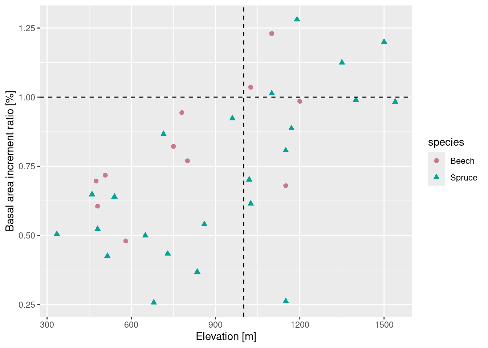
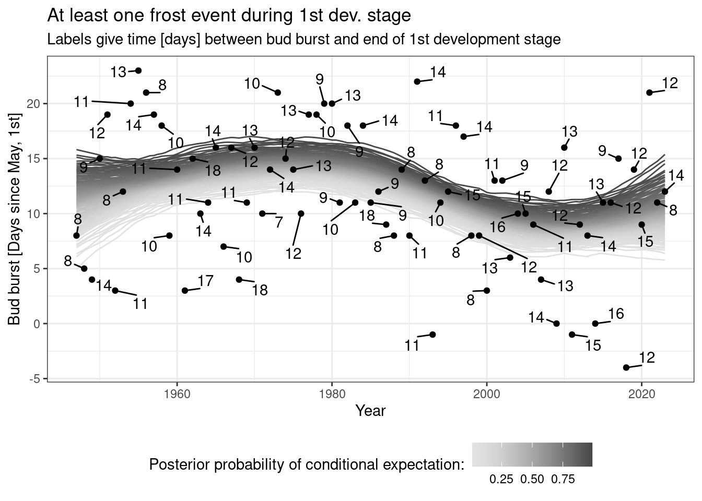

Introduction to R: Session 01
May 16, 2024 (Version 0.6)
All contents are licensed under CC BY-NC-ND 4.0.
1 (Int)R(o)
1.1 What is R?
‘A Language for Data Analysis and Graphics’
A first example: Scatter plot, data-management and descriptive analysis
## A scatter-plot ...
library("ggplot2")
library("colorspace")
ggplot(data = drought,
aes(x = elev, y = bair, color = species, shape = species)) +
geom_point(size = 2) +
geom_vline(xintercept = 1000, linetype = "dashed") +
geom_hline(yintercept = 1, linetype = "dashed") +
scale_color_discrete_qualitative(pal = "Dark") +
labs(x = "Elevation [m]", y = "Basal area increment ratio [%]")
## [1] 335 1540## [1] 1 6br <- seq(tmp[1] * 250, (tmp[2] + 1) * 250, by = 250)
(drought$elev_cut <- cut(drought$elev, breaks = br))## [1] (250,500] (250,500] (250,500] (500,750]
## [5] (500,750] (500,750] (500,750] (500,750]
## [9] (500,750] (750,1e+03] (750,1e+03] (750,1e+03]
## [13] (1e+03,1.25e+03] (1e+03,1.25e+03] (1e+03,1.25e+03] (1e+03,1.25e+03]
## [17] (1e+03,1.25e+03] (1e+03,1.25e+03] (1e+03,1.25e+03] (1.25e+03,1.5e+03]
## [21] (1.25e+03,1.5e+03] (1.25e+03,1.5e+03] (1.5e+03,1.75e+03] (250,500]
## [25] (250,500] (500,750] (500,750] (500,750]
## [29] (750,1e+03] (750,1e+03] (1e+03,1.25e+03] (1e+03,1.25e+03]
## [33] (1e+03,1.25e+03] (1e+03,1.25e+03]
## 6 Levels: (250,500] (500,750] (750,1e+03] ... (1.5e+03,1.75e+03]## ... and then some descriptive statistics:
library("plyr")
ddply(.data = drought, .variables = c("species", "elev_cut"),
summarize, .drop = F,
n = length(bair),
mean_bair = mean(bair))## species elev_cut n mean_bair
## 1 Beech (250,500] 2 0.6515000
## 2 Beech (500,750] 3 0.6733333
## 3 Beech (750,1e+03] 2 0.8570000
## 4 Beech (1e+03,1.25e+03] 4 0.9827500
## 5 Beech (1.25e+03,1.5e+03] 0 NaN
## 6 Beech (1.5e+03,1.75e+03] 0 NaN
## 7 Spruce (250,500] 3 0.5586667
## 8 Spruce (500,750] 6 0.5205000
## 9 Spruce (750,1e+03] 3 0.6103333
## 10 Spruce (1e+03,1.25e+03] 7 0.7952857
## 11 Spruce (1.25e+03,1.5e+03] 3 1.1050000
## 12 Spruce (1.5e+03,1.75e+03] 1 0.98300001.2 Why useR?
Because of packages such as mgcv!
… and because we can organize our whole working-with-data-process reproducibly (markdown!) in one place!
(Note: the following figure is much too overloaded!)
## library("mgcv")
m <- mgcv::gam(bud_burst_days_since_may1st ~ te(year), data = frost)
nd <- data.frame(year = seq(min(frost$year), max(frost$year), by = .5))
tmp <- mgcv::gam.mh(m, thin = 5, ns = 2000, rw.scale = 2)$bs
coda::effectiveSize(coda::as.mcmc(tmp))
tmp <- predict(m, newdata = nd, type = "lpmatrix") %*% t(tmp)
tmp <- apply(X = tmp, MAR = 1 , FUN = quantile,
probs = seq(.01, .99, by = .01))
tmp <- data.frame(q = as.numeric(tmp),
year = rep(nd$year, each = nrow(tmp)),
p = rep(seq(.01, .99, by = .01), ncol(tmp)))
library("ggrepel")
ggplot(data = tmp, aes(x = year, y = q)) +
geom_line(aes(group = p, color = p)) +
scale_color_continuous_sequential(pal = "Light Grays") +
geom_point(data = frost, aes(x = year, y = bud_burst_days_since_may1st)) +
geom_text_repel(data = frost, aes(x = year, y = bud_burst_days_since_may1st,
label = end_1st_dev_stage - bud_burst),
min.segment.length = 0, box.padding = .5) +
labs(x = "Year", y = "Bud burst [Days since May, 1st]",
title = "At least one frost event during 1st dev. stage",
subtitle = "Labels give time [days] between bud burst and end of 1st development stage",
color = "Posterior probability of conditional expectation:") +
theme_bw() +
theme(legend.position = "bottom")
1.3 Literature
1.3.1 Books…
- Everitt, Hothorn (2006): A Handbook of Statistical Analyses using R. Chapman and Hall.
- Ligges (2008): Programmieren mit R. Springer Verlag.
- Venables, Smith (2002): An introduction to R. Network Theory Verlag.
- Verzani (2005): Using R for Introductory Statistics. Chapman and Hall.
- Wickham (2016): Advanced R.
1.3.2 … and the wide web:
1.4 R and RStudio
R:
- https://r-project.org
- Freely available
- Supported by all major operating system: Windows, Linux/Unix, Mac OS, …
RStudio and others editors for working with R:
- RStudio for Windows, Mac OS and Linux:
- RStudio website
- RStudio cheat sheet
- Previously, I presented a list of alternatives to RStudio, but in 2024, that doesn’t seem suitable anymore!?
1.5 R is a language
‘To understand computations in R, two slogans are helpful: Everything that exists is an object. Everything that happens is a function call.’ (John M. Chambers)
Interpreted language: R interprets and evaluates your function calls without a compilation step.
Simple syntax with clear similarities to mathematical notation.
1.6 R is an environment for statistical computing
- Rich toolbox for doing (graphical) statistics with an ever growing list of ever improving ‘add-on’ packages.
- R is freely available for anyone.
- R code is the product: it is transparent and allows you to reproduce any single step of your analysis.
1.7 A short history of R
- 1976: Development of programming language S at Bell Laboratories
- 1988: Software S-PLUS released (for purchase)
- 1992: Ross Ihaka and Robert Gentleman start project R
- 1995: R available for free under GPL
- 1998: Comprehensive R archive network (CRAN) is founded
- 2000: First ‘complete’ version R-1.0.0 released
- 2004: First conference on R (useR!) takes place
- 2021: Current version is R-4.4.0 (May 2024)
2 Basic vector types
In R, there is no such thing as a single number, since in R, a single number is just a vector of length 1:
## [1] 1R works on six basic vector types, of which four are used in our daily work as empirical researchers:
logical(TRUEandFALSE),integer(numbers we know as …,-1,0,1,2, …; explicitly created in R with suffixL),numeric(extending integers to ‘any’ value such as1/3), andcharacter('R','Beech', …).
## [1] "logical"## [1] "integer"## [1] "numeric"## [1] "character"Again, the difference between integer and numeric (real number) is not important for our applied work, so just think of integer and numeric as classes that represent numerical values in a computer.
The following section introduces some manipulations we can do with them, logical and character will be treated later.
3 Basic mathematical commands
| Mathematical operation | Command |
|---|---|
| Addition | + |
| Subtraction | - |
| Multiplication | * |
| Division | \ |
| Exponentiation | ^ |
| Rest of integer division (Modulo) | %% |
| Integer division | %\% |
| Brackets | () |
3.1 Exercises
Run the following lines.
Note:
First and third line define objects a and b by using an indexing command on data-object drought. You don’t need to fully understand what this doeas at this point of the course, just think that objects a and b each represent a single number with some applied meaning (Basal area increment ratio at 1st, and 2nd plot, respectively).
a <- drought$bair[1] ## Basal area increment ratio at 1st plot
a ## ... growth is about a half in 2003 in comparison to growth in 2002
b <- drought$bair[2] ## Basal area increment ratio at 2nd plot
b ## ... growth is about two thirds in 2003 in comparison to growth in 2002
a - b ## Whats the difference of bair?
a / b ## Whats the ratio of bair?
b %/% a ## How often is 'b' contained in 'a'?
b %% a ## If 'b' is contained once in 'a', what's remaining?
(a + b)/2 ## Arithmetic mean of 'a' and 'b'Did we just calculate an arithmetic mean ‘by hand’?
## [1] 0.57654 Symbols and values
| Objective | Call |
|---|---|
| Decimal sign | . |
| List and seperate objects, arguments, … | , |
| Several R-calls in one line (not recommended) | ; |
| ‘from-to’ operator for integer sequences | : |
| Comments and help | #, ? |
| Number \(\pi\) | pi |
| A concept called infinity | Inf |
| Base 10 exponential notation (eg. \(10^{-3}=0.001\)) | 1e-3 |
| Integer value | L |
| Empty object | NULL |
| Missing value (not available) | NA |
| Non-defined value (not a number) | NaN |
| Comparison | >, >=, ==, !=, <=, < |
| Boolean | TRUE, T, FALSE, F |
| Negation (not) | ! |
| Conjunction (and) | & |
| Disjunction (or) | | |
Remember, everything in R is an object or a function, so we even can’t use , without a function call such as:
## [1] 0.505 0.6484.1 Exercises
Run the following lines and ask yourself What is the applied question behind each line?.
5 Mathematical functions
| Mathematical function | Call |
|---|---|
| Exponential function with basis \(e\) | exp() |
| Natural logarithm | log() |
| Square root | sqrt() |
| Absolute value | abs() |
| Trigonometric functions | sin(), cos(), tan() |
| Sum and product | sum(), prod() |
| Round (up and down) | round() (floor(), ceiling()) |
| Maximum and minimum value | max(), min() |
| Factorial \(n! = 1\cdot 2\cdot 3\cdot\ldots\cdot n\) | factorial() |
| Binomial coefficient \(n \choose k\) | choose() |
… for further functions, see ?Special and ?groupGeneric.
Also note: There are only countable many numbers that a computer is able to represent. Therefore, computers can also only represent some real numbers, and as a consequence, ‘rounding’ is more complicated than we might think! Here are some explanations why R results in 0 2 2 4 4 6 6 instead of 0 1 2 3 4 5 6 when it does round(seq(0.5, 6.5)). Many thanks to Jan Schick for pointing me towards this ‘rounding’ standard in R, as well as providing me this nice example. Session 05 will also briefly touch upon R and computers and the ‘density’ of real numbers.
5.1 Exercises
Run the following lines.
a <- drought$bair[1]; a; b <- drought$bair[2]; b ## Basal are increment ratio values of first two stands
exp(x = a)
sqrt(x = a)
a - b
abs(x = a - b)
sum(a, b)
max(a, b)Computers construct real values!
## [1] 1.224647e-16## [1] 0## [1] -16 Functions basics
(We will have a more detailed focus on functions in the third session.)
Basic properties of functions in R:
- Function call of function
fusing brackets:f() - Documentation (‘help-page’) using preceded question mark (
?f), or callinghelp(f) - Search for documentation of
fby:help.search('f') - Syntax:
- Arguments often have default objects, eg. for
pchinplot():
- Providing argument names is not optional in any case:
## [1] 1## [1] 1## Error in plot.xy(xy, type, ...): unzulässiger Plottyp '1'7 Documentation
Structure:
- Description: In brief, what is this function about?
- Usage: How to call the function? What are mandatory arguments?
- Arguments: Explaining each argument
- Details: Some text about implementation, scope, …
- Value: Explaining the resulting object
- Authors and References and See also and …
- Examples: Always at the bottom, always scroll down there, you will never be disappointed!
7.1 Exercises
Go to the documentation for lm.
- What is this function about?
- Copy-paste and run the example.
8 Objects
Basic Conventions:
- Objects store values, results or algorithms, ie. functions.
- Assignment of contents by
<-or=(or very seldomly->). - Type of contents is described by object classes.
## [1] 0.505## [1] 0.505## [1] -0.4338646## [1] 0.648## [1] 0.6488.1 Objekt names
There are few hard technical restrictions on how to name objects in R, and a few soft rules that make life much simpler:
- Object names are requared to begin with a lower or upper case letter, no numbers or any other signs are allowed.
- For any trailing character, numbers and some signs (restrict yourself to underscore
_and.) are allowed - Don’t use
?,$,%,^,&,*,(,),-,#,?,,,<,>,/,|,\,[,],{, and@ - As short as possible, as long as needed!
- This trade-off is simple, but (hopefully) still very useful: long object names mean more typing (RStudio weakens this point by auto-complete), but leave less room for questions on content (What was
aagain?). - So try to give ‘telling names’, ie. contents (and units!) should be clearly visible from the object’s name:
first_bair_measurementis better thana,elev_mis better thanelev. - Ask yourself: Will I be able to immediately recall the content of an object by the object name, even after two weeks no work on this project?
We get an error message:
## Error: <text>:1:2: unerwartetes Symbol
## 1: 3values
## ^8.2 Save and load
Where will my files be stored? See section Preparatory Work in R in Session 04.
8.3 Litter service
- Names of objects in current session:
ls() - Litter service using
rm() dput()comes as a helper
## [1] "a" "b" "br" "df" "drought"
## [6] "frost" "m" "nd" "three_values" "tmp"## c("a", "b", "br", "df", "drought", "frost", "m", "nd", "three_values",
## "tmp")## c("a", "b", "br", "m", "nd", "three_values", "tmp")## [1] "df" "drought" "frost"9 Dataobject classes
9.1 Vector
A vector is a one-dimensional combination of length 1 vectors of the same basic vector type.
9.1.1 Basics
| Objective | Call |
|---|---|
| Combination of elements | c(A, B) |
| Indexing | c(A, B)[1] |
| Length of vector | length(x) |
| Integer sequence | A:B |
| Flexible sequence | seq(A, B, length = N), seq(A, B, by = K) |
| Repeat | rep(A, times = N), rep(c(A, B), each = K) |
| Sort elements | sort(c(A, B), decreasing = FALSE) |
| Order of elements | order(c(A, B)) |
9.1.2 Exercises
Copy-paste and run each line: describe what it does and what it results in.
a <- drought$elev[1]; b <- drought$elev[2]
(x <- c(a, b))
c(x, a)
c(x, x)
x[2] <- drought$elev[3]; x
length(x)
a:b
seq(a, b, by = .5)
seq(a, b, by = 5)
seq(a, b, length = 10) ## Sequenz
rep(x, times = 3)
rep(x, each = 3)
rep(x, length = 7)
sort(x, decreasing = TRUE)
order(c(x, 100))
a <- as.character(drought$species[1]); b <- as.character(drought$species[2])
(x <- c(a, b))
c(x, "Beech")
c(x, 2)9.2 Calculations
- Basic calculations operate independently on all elements
- Function calls work (usually) with vectorized arguments
- Summary of the content:
summary() - Frequency table:
table()(see Session 04 for much more detail)
9.3 Matrix
A vector is a two-dimensional combination of single-element objects of the same class.
9.3.1 Basics
P\(\times\)P matrix with content content:
Fill matrix column- (default) or line-wise using argument byrow = TRUE:
- Indexing of one element:
A[1, 1] - Indexing of first row (result is vector):
A[1, ] - Indexing of several rows (result is matrix):
A[1:3, ] - Indexing of first column (result is vector):
A[, 1] - Indexing of several columns (result is matrix):
A[, 1:3] - Indexing of several rows and columns (result is matrix):
A[1:3, 1:3]
9.3.2 Exercises
9.4 List
A list is a general ‘container’ object.
9.4.1 Basics
- Lists may contain elements storing objects of varying classes, lengths, …. (
character,numeric,integer,factor, …) - Construct a list using
list(...) - Indexing:
x[[1]]orx[['name']]orx$name strgives the structure- For lists of ‘consistent’ classes (or generic functions):
9.5 Synthesis and indexing
- We may provide names for elements of vectors, matrices and lists:
dimnames(A),rownames(A),colnames(A)for matrices- Select a named element by using the
$sign - Select elements by
[[]](for lists),[](for vectors), and[, ](for matrices).
9.6 Dataframe
Based on their object properties, dataframes can be classified between matrices and lists, whereby the columns (the so-called ‘variables’) of the dataframe correspond to the elements of a list:
- Dataframes are more rigid than lists because all columns must have the same length,
- Dataframes are more flexible than matrices, since all columns can contain different contents (numbers, strings, …).
- Dataframes are generated with
data.frame () - Indexing:
- Rows and columns can be indexed in the same way as the elements of a matrix,
- Columns can be indexed in the same way as the elements of a list (we have already used this by
drought$elev).
9.6.1 Exercises
weather <- data.frame(day = c("Monday", "Tuesday", "Wednesday"),
daily_mean_temperature_C = c(12, 14, 11),
precipitation_sum_mm = c(5, 9, 25),
site = "Goettingen")
weather
weather[1:2, ]
weather$day[1:2]
weather[["daily_mean_temperature_C"]][3]
weather[1:2, c("daily_mean_temperature_C", "precipitation_sum_mm")]
weather[1:2, c("day", "precipitation_sum_mm")]9.7 Functions on dataframes
summary: Summary of each of the variables in the dataframestr: overview of the structure of the dataframedim: Dimension of the dataframe (number of rows and columns)- The first
Nlines of a dataframedfare extracted withhead(df, n = N), and - the last
Nlines of a dataframedfare extracted withtail (d, n = N).
10 Functions for character strings
If we want to change character strings (such as variable names of a dataframe), the following functions can be helpful:
tolower und toupper
Replaces uppercase with lowercase letters (and vice versa).
## [1] "BEECH" "BEECH" "BEECH"## [1] "beech" "beech" "beech"gsub
Replace a pattern:
## [1] "day" "daily_mean_temperature_C"
## [3] "precipitation_sum_mm" "site"names(weather) <- gsub(names(weather), pattern = "_mm", replacement = "__mm", fixed = T)
names(weather) <- gsub(names(weather), pattern = "_C", replacement = "__C", fixed = T)
names(weather)## [1] "day" "daily_mean_temperature__C"
## [3] "precipitation_sum__mm" "site"substring
Substrings from first to last.
## [1] "day" "daily" "preci" "site"strsplit
Splits strings according to a certain pattern (strsplit always returns a list).
names(weather) <- gsub(names(weather), pattern = "__", replacement = "_", fixed = T)
(tmp <- strsplit(names(weather), split = "_", fixed = T))## [[1]]
## [1] "day"
##
## [[2]]
## [1] "daily" "mean" "temperature" "C"
##
## [[3]]
## [1] "precipitation" "sum" "mm"
##
## [[4]]
## [1] "site"11 Factors
For the analysis of qualitative characteristics, it makes sense to represent variables with character strings as factors.
A factor comes with three ingredients:
- data vector
x levelslabels
We can generate a factor without specification of levels and labels:
In this case, factor levels (levels) are generated (in alphabetical order), numbered internally (see this numeric expression using as.numeric), and represented externally by the original values of the character string.
## [1] Beech Spruce Beech
## Levels: Beech Spruce## $levels
## [1] "Beech" "Spruce"
##
## $class
## [1] "factor"## [1] "Beech" "Spruce"## [1] 1 2 1## [1] "Beech" "Spruce" "Beech"We can provide levels, to which the numerical representation will refer to:
## [1] Beech Spruce Beech
## Levels: Spruce Beech## $levels
## [1] "Spruce" "Beech"
##
## $class
## [1] "factor"## [1] "Spruce" "Beech"## [1] 2 1 2## [1] "Beech" "Spruce" "Beech"Using labels, the values represented externally are the result of the mapping from levels to labels
(tmp <- factor(x = c("Beech", "Spruce", "Beech"),
levels = c("Beech", "Spruce"),
labels = c("Fagus sylvatica", "Picea abies")))## [1] Fagus sylvatica Picea abies Fagus sylvatica
## Levels: Fagus sylvatica Picea abies## $levels
## [1] "Fagus sylvatica" "Picea abies"
##
## $class
## [1] "factor"## [1] "Fagus sylvatica" "Picea abies"## [1] 1 2 1## [1] "Fagus sylvatica" "Picea abies" "Fagus sylvatica"11.1 Exercises
tmp <- factor(x = c("Beech", "Spruce", "Beech", "Oak"),
levels = c("Beech", "Spruce"),
labels = c("Fagus sylvatica", "Picea abies"))
attributes(tmp)
levels(tmp)
as.numeric(tmp)
as.character(tmp)
tmp <- factor(x = c("Beech", "Spruce", "Beech", "Oak"),
levels = c("Beech", "Oak", "Spruce"),
labels = c("Deciduous", "Deciduous", "Conifer"))
attributes(tmp)
levels(tmp)
as.numeric(tmp)
as.character(tmp)References
Private webpage: uncertaintree.github.io↩︎